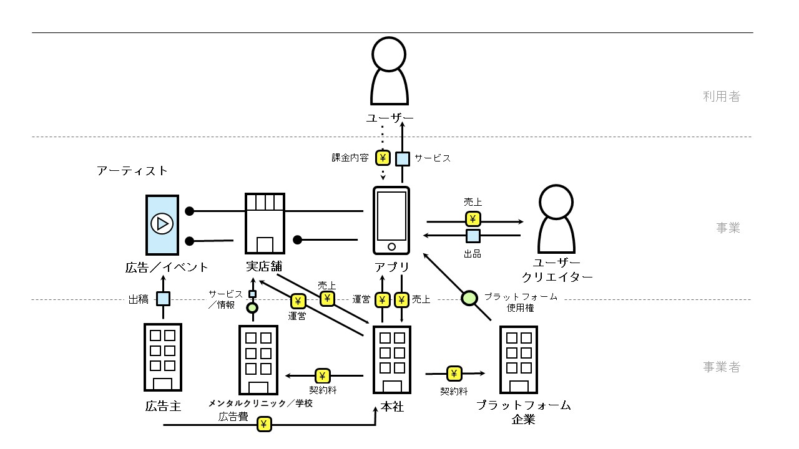
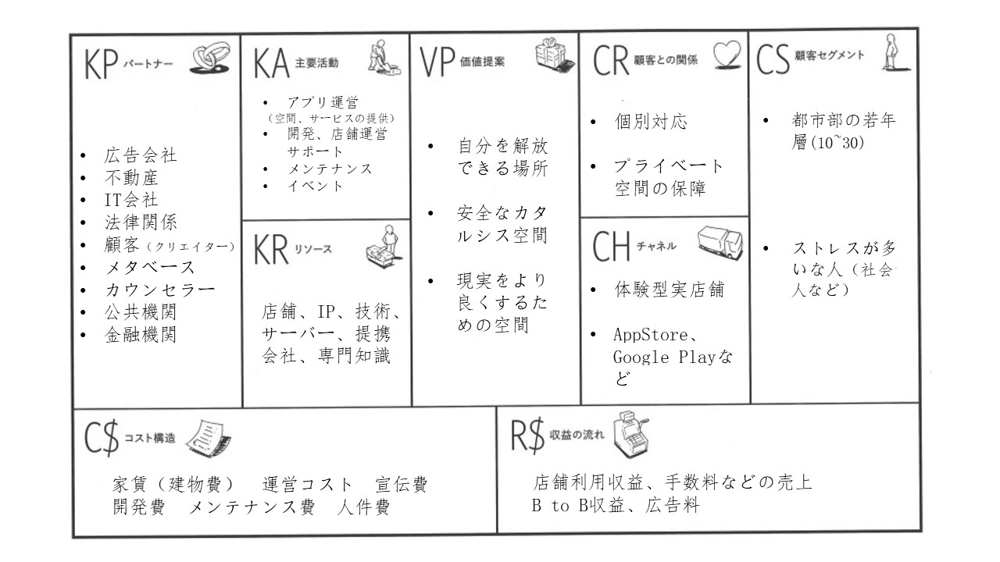

未定
VRを活用した癒し空間を提供するオフライン店舗
現代社会において深刻化している、インターネットや仮想世界への過度な依存、
そしてそれが社会の治安や労働力に及ぼす負の影響を解消することを目的とする。
本事業はメタバース構想を中核とし、仮想現実（VR）技術を活用した サービスとオフライン店舗体験を提供することを目的とする。 VR技術によって物理的制約を超え、学校や心理相談機関などと連携しながら、 利用者に心理的な癒しを提供し、現実に向き合う自信と勇気を取り戻す手助けを行う。 最終的には、ネットワークや仮想世界への過度な依存を軽減し、 社会に失われつつある労働力の回復に貢献することを目指す。


本企画は、仮想現実プラットフォームの開発を中心に据え、
高い自由度を持ち、取引やSNS機能を備えた統合型サービスソフトを構築することで、
収益基盤および影響力拡大を図るものである。
同時に、オフライン体験店舗を設置し、VR機器および空間のレンタルを行う。
見知らぬ環境とVR技術の組み合わせにより没入感を高め、
プライバシー性の高い、より完全な体験を提供する。
人口増加と競争の激化が進む現代社会において、娯楽は生活に欠かせない要素となっている。
しかし、社会的ストレスの増加により、電子機器や仮想世界への依存が深刻化しつつあり、
生産性の低下や治安への潜在的な悪影響が懸念されている。
一方で、スマートフォン技術の発展は飽和状態に近づいており、
VR（仮想現実）、MR（複合現実）、AR（拡張現実）技術が普及・低価格化する中で、
今後さらに人々の電子機器依存が強まる可能性がある。
また、安全な環境で挑戦や練習を行う機会が少ない人々は、
現実の困難に直面した際に自信を失いやすい。
本プロジェクトは、VR技術を通して「現実とは異なる練習の場」を提供し、
仮想空間での試行錯誤を通じて、利用者が現実世界での自信と対応力を高めることを目的とする。
このような背景のもと、私たちは現実世界と仮想世界をつなぐ架け橋を築き、
人と現実とのつながりを強化し、現実への期待と充実感を取り戻すことを目指している。
ソフトウェア面では、「高い自由度」が継続的な運営の鍵となる。
基盤となるプラットフォームを提供する一方で、
コンテンツ制作や開発の自由度をユーザーに委ねることで、
コンテンツの多様化と利用者の定着を促進する。
現在のバーチャル配信市場の機会を捉え、
プラットフォームの自由度・ゲーム性・仮想空間特性を活かして
バーチャルアイドルや配信市場を統合し、
プロモーション効果と流入を拡大する。
さらに、SNS機能を最適化し、現実の人間関係の再構築を重視することで、
ソフトの「日常利用価値」を高め、市場競争力を強化する。
また、現行のVR市場には統一的で便利な取引プラットフォームが不足しているため、
ソフト内に取引システムを整備し、クリエイターの参加を促進して
コンテンツを充実させるとともに、
手数料モデルによる収益化を実現する。
一定の市場シェアと影響力を確立した後は、
心理クリニックや教育機関との連携を深め、
オンラインイベントや専用コンテンツを通じて
利用者のストレス軽減や心のケアをサポートする。
その結果、利用者が自信を取り戻し、現実社会へと再び踏み出せるよう支援する。
一部の利用者は、家庭環境や経済的理由、騒音などの問題から、
十分なサービスを受けることが難しい場合がある。
そのため、初期段階ではカラオケ店、ネットカフェ、ホテルなどと提携し、
余剰空間を活用してサービスを提供する。
これにより、飲食などの付随売上を高めつつ、
より手軽で受け入れやすい形でユーザーに体験を提供できる。
最終的な目標は、心に課題を抱える人々が
個人の世界から一歩外に出て、現実社会へと戻るための
助けとなることである。